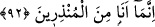

“Bana müslümanlardan” İslam dînî ve tevhid üzere sâbit olanlardan ya da
yüzünü/varlığını sadece Allah’a çevirip O’na teslim olanlardan “olmam emredildi.”
et-Te’vîlâtü’n-Necmiyye’de der ki: “İşâret etmektedir ki hakîkî müslüman, şeriatla
amel konusunda Hz. Peygamber (a.s.)’in zâhirde şeriatla amel ettiği gibi amel eden
kimsedir. Bu müslümanlar hakkında inâyetin kemâlidir. Çünkü ‘Bana mü’minlerden
olmam emrolundu.” buyrulsaydı, kim îmanının Hz. Peygamber (s.a.)’in îmanı gibi
olmasına güç yetirebilirdi. “Ben müslümanların ilkiyim” (el-En’âm, 6/163) âyeti de
buna benzer. İşte bu yüzden Hz. Peygamber (s.a.): “Benim namaz kıldığımı gördüğünüz
gibi namaz kılın.” buyurmuştur. Yani, zâhirde böyle kılın, demektir. Eğer ‘Benim namaz
kıldığım gibi namaz kılın’ buyursaydı, kim buna güç yetirebilirdi?! Çünkü Hz.
Peygamber (s.a.) namaz kılarken ağlamaktan göğsünde tencerede kaynayan su sesine
benzer bir ses duyulurdu. O, namazda önünden gördüğü gibi arkasından da görürdü.
92. “Ve Kur’an’ı okumam (emredildi). Artık kim doğru yola gelirse, yalnız
kendisi için gelmiş olur; kim de saparsa ona de ki: Ben sadece uyarıcılardanım.
“Ve Kur’an’ı okumam (emredildi).”
“
” tıpkı mütâlaa ve vazife olarak verilen evrâd gibi Kur’ân’ı peşpeşe, devam
üzere okumaya denir. “
” kelimesi daha geneldir. “
” demek, ikisi arasında o iki
şeyden başkası bulunmadan peşpeşe okudu, demektir. Yâni Kur’ân’ın tilâveti ile onun
hakîkatlarının yavaş yavaş bana keşfolması/açılması için onu okumaya devam etmem
emrolundu. Çünkü Kur’ân’ı tilâvet eden âlim onu tefekkür ettikçe kendisine gizli
hicaplar altında bulunan yeni mânâlar tecellî eder. Bu yüzden hikmet ehli âlimler
Kur’an tilâvetine doymazlar. Kur’ân’ın onların en son virdi olmasının sırrı da budur.
Çünkü âriflere ilk olarak keşfolunan âfâkın hakîkatları, sonra enfüsün hakîkatları, sonra
da Kur’ân’ın hakîkatlarıdır.
Şu halde her gün Kur’an tilâvetine devam et, bâzı ilim tâliblerinin ve mutasavvıfların
daha önemli işlerle uğraştıklarını iddiâ ederek -ki bu bir yalandır- yaptığı gibi onu terk
etme. Çünkü Kur’ân dünyada her ilmin aslıdır.
Kur’ân’ı mushaftan okuyanın kıraatı cehren (açıktan) okuması, elini okuduğu âyete
koyarak takip etmesi müstehabtır. Böylece dili sesini yükseltmekten, gözü bakmaktan,
eli dokunmaktan nasibini almış olur.
Kur’ân’ı dinlemek gezici meleklerin rızıklarının en şereflisi ve en üstünüdür.
Kendisine Kur’an tilâveti müyesser olmayan kimse, gıdası ilim olan ruhlar için ilmin
neşredildiği meclislerde otursun. Ancak bu Kur’ân ilimlerinden ötesine geçmemelidir.
Kulakların bâtınî temizliği, güzel sözleri dinlemekle olur. Çünkü güzel vardır, daha